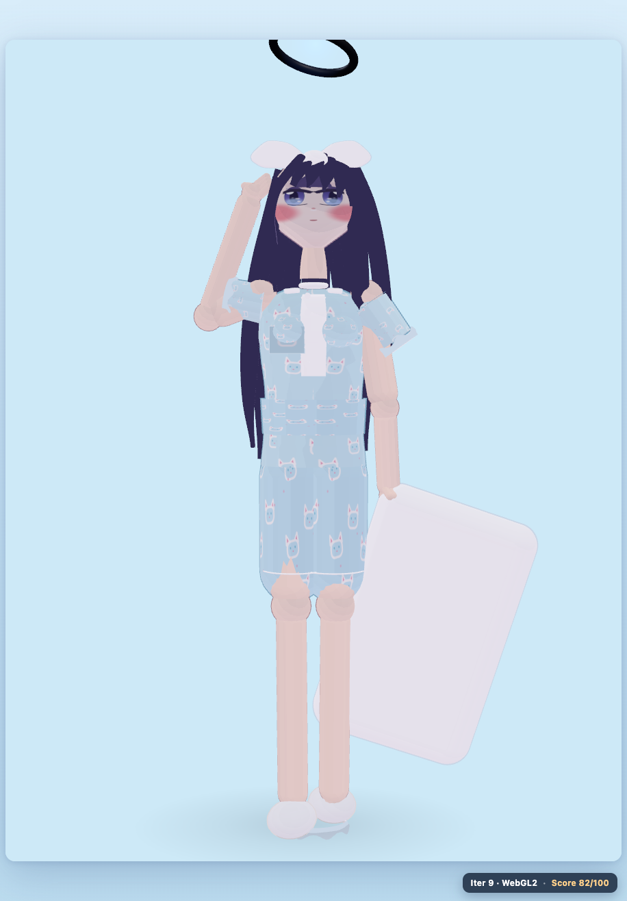
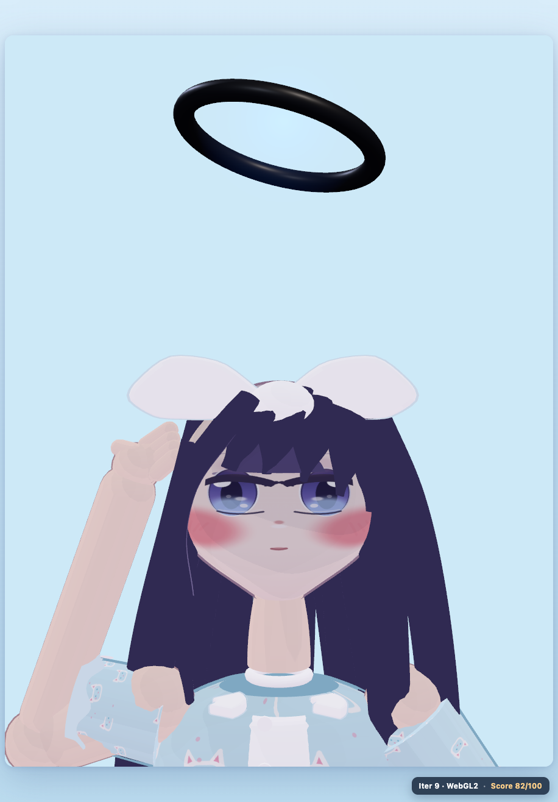

Model: GLM-5.3-Flash
Agent: opencode
Tool: web (three.js r180, WebGPU + WebGL 2)
The pajama girl with the halo, the white bow, the cat-print pyjamas and the pillow — rebuilt as a real-time 3D character from a single illustration.
Built from scratch: custom lofts, ribbon strands, lathed garments, Canvas2D face and cat-print textures, inverted-hull ink outlines.

